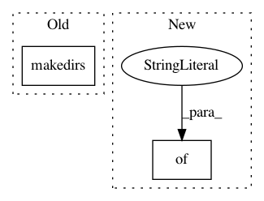

e3d577b5595af3e1c9a05d3be84dbdf1a7c4aa20,nilearn/datasets/tests/test_atlas.py,,test_fetch_atlas_aal,#Any#Any#,379
Before Change
def test_fetch_atlas_aal(tmp_path, request_mocker):
ho_dir = str(tmp_path / "aal_SPM12" / "aal" / "atlas")
os.makedirs(ho_dir)
with open(os.path.join(ho_dir, "AAL.xml"), "w") as xml_file:
xml_file.write("<?xml version="1.0" encoding="us-ascii"?> "
"<metadata>"
"</metadata>")
After Change
b"<metadata></metadata>")
archive_root = Path("aal", "atlas")
aal_data = dict_to_archive(
{archive_root / "AAL.xml": metadata, archive_root / "AAL.nii": ""})
request_mocker.url_mapping["*AAL_files*"] = aal_data
dataset = atlas.fetch_atlas_aal(data_dir=str(tmp_path), verbose=0)
In pattern: SUPERPATTERN
Frequency: 4
Non-data size: 2
Instances
Project Name: nilearn/nilearn
Commit Name: e3d577b5595af3e1c9a05d3be84dbdf1a7c4aa20
Time: 2020-07-29
Author: jerome@dockes.org
File Name: nilearn/datasets/tests/test_atlas.py
Class Name:
Method Name: test_fetch_atlas_aal
Project Name: IBM/adversarial-robustness-toolbox
Commit Name: b18167d070cc0563998de54d54c8bd6757dfe7b3
Time: 2019-04-16
Author: M.N.Tran@ibm.com
File Name: art/classifiers/tensorflow.py
Class Name: TFClassifier
Method Name: save
Project Name: interactiveaudiolab/nussl
Commit Name: 5cdb40f9328d44aa88f14cff8c3b341069346121
Time: 2019-08-06
Author: prem@u.northwestern.edu
File Name: nussl/deep/train/trainer.py
Class Name: Trainer
Method Name: save
Project Name: AllenCellModeling/pytorch_fnet
Commit Name: b58d873bc4344117bf8a2b42651e9acb5aeddb4e
Time: 2018-01-22
Author: chek.o@outlook.com
File Name: predict.py
Class Name:
Method Name: main